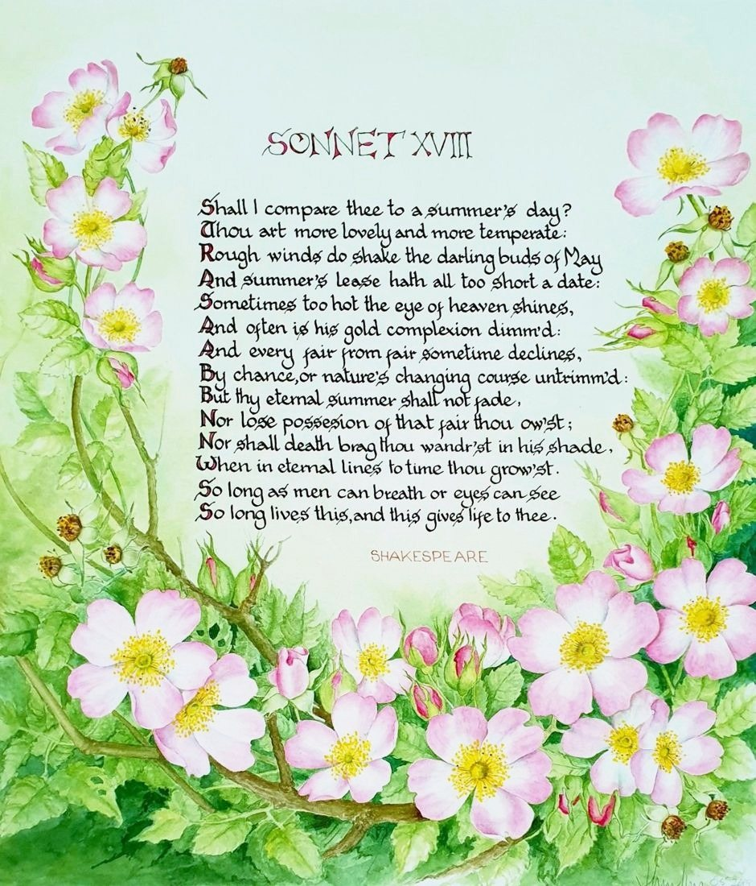

Sonnet 18
No. P6- Medium
- Ink and watercolour on paper
- Size
- 26 × 22.5 cm
- Year
- 2019
- Price
- Price on request
[A few lines from Joan about this painting]
Ask about this paintingOr email enquiries@joanmullinsart.co.uk, quoting No. P6. UK only. Collection from Nantwich is free; UK postage is quoted when you enquire.
 The Lake Isle of Innisfree
The Lake Isle of Innisfree Tyger, Tyger
Tyger, Tyger I expect
I expect